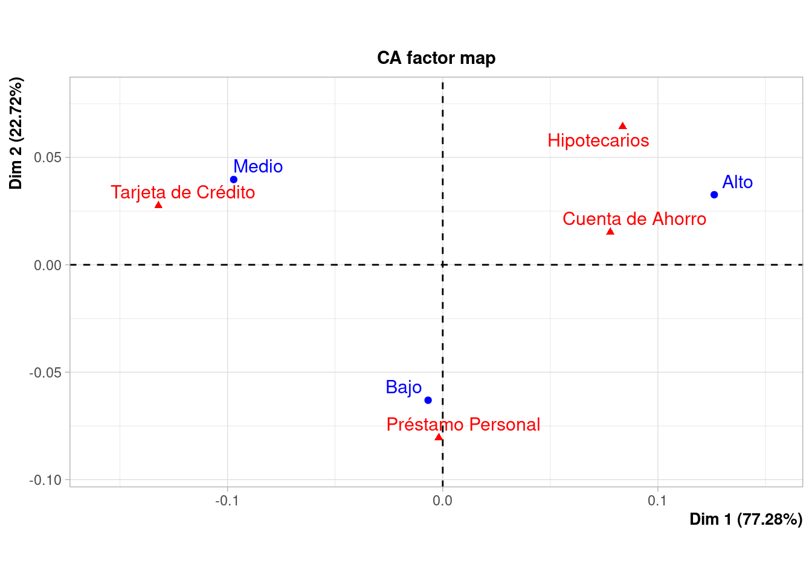

El análisis de correspondencia (CA, por sus siglas en inglés) es una técnica estadística multivariante diseñada para explorar y analizar tablas de contingencia que contienen algunas medidas de correspondencia entre dos o más variables categóricas. Proporciona una forma de visualizar la estructura de las relaciones categóricas en un conjunto de datos de baja dimensionalidad, idealmente en dos o tres dimensiones.
CA se aplica a una tabla de contingencia, que es una matriz de frecuencias que cuenta cuántas veces cada combinación de categorías de variables ocurren juntas en un conjunto de datos.
El objetivo principal es identificar patrones y similitudes entre las categorías de las variables, visualizándolas en un espacio de menor dimensión que capture la mayor parte de la variabilidad en los datos.
Utiliza técnicas de descomposición, como la descomposición en valores singulares (SVD), para reducir la dimensionalidad y proyectar las categorías de las variables en un mapa que muestra las relaciones entre ellas.
Se normalizan los datos para convertir las frecuencias en proporciones y ajustar por efectos de tamaño de margen.
Se calculan los perfiles de fila y columna (proporciones condicionales de cada categoría) y se comparan con el perfil promedio global.
El resultado se representa comúnmente en un biplot, donde las categorías de cada variable se plotean como puntos en un espacio bidimensional o tridimensional. La proximidad entre puntos indica un mayor grado de asociación.
Para entender las preferencias del cliente y segmentación del mercado.
Para analizar patrones de especies en diferentes hábitats.
Se requiere la relación entre el nivel de ingresos de los clientes y los tipos de productos financieros que utilizan. Este análisis puede ayudar a la entidad financiera a entender mejor cómo diferentes segmentos de clientes prefieren diferentes productos, lo cual es crucial para la personalización de servicios y marketing.
Con este propósito se requiere analizar cómo la elección de productos financieros varía según diferentes rangos de ingresos de los clientes. Los productos incluidos son : cuentas de ahorro, tarjetas de crédito, pretamos para vivienda (hipotecarios) y préstamos personales. Los ingresos se clasifican en tres categorías: bajo, medio y alto.
Supongamos que tenemos la siguiente tabla de contingencia que representa la distribución de 1000 clientes:
| Ingresos/Productos | Cuenta de Ahorro | Tarjeta de Crédito | Hipotecarios | Préstamo Personal |
|---|---|---|---|---|
| Bajo | 200 | 150 | 50 | 100 |
| Medio | 150 | 180 | 120 | 50 |
| Alto | 50 | 170 | 180 | 100 |
# Instalar FactoMineR si aún no está instalado
if (!require("FactoMineR")) install.packages("FactoMineR")
# Cargar el paquete FactoMineR
library(FactoMineR)
# Crear la tabla de datos
data <- matrix(c(200, 150, 50, 150, 180, 170, 50, 120, 180, 100, 50, 100),
nrow = 3, byrow = TRUE,
dimnames = list(Ingresos = c("Bajo", "Medio", "Alto"),
Productos = c("Cuenta de Ahorro", "Tarjeta de Crédito", "Hipotecarios", "Préstamo Personal")))
# Ejecutar el análisis de correspondencia
ca_results <- CA(data, graph = TRUE)
# Dibujar el biplot con ambas variables visibles
# plot(ca_results, invisible = "none") # Ajuste para que ningún conjunto de etiquetas sea invisibleEl gráfico resultante representa cada una de las categorías para el caso de los propoductos y los niveles de los ingresos en el plano. Se resalta la asoacoón existente entre:
Este análisis puede ayudar a la entidad a ajustar sus estrategias de marketing y desarrollo de productos para alinearlos mejor con las necesidades y preferencias de sus diferentes segmentos de clientes.
El tipo de datos empleados en el análisis de correspondencia son:
Respuesta correcta: B) Datos categóricos
El principal objetivo del análisis de correspondencia es:
Respuesta correcta: C) Explorar y visualizar las relaciones entre variables categóricas
En el resultado de un análisis de correspondencia, la proximidad entre dos puntos en el gráfico indica:
Respuesta correcta: B) Correlación positiva entre las categorías
Cada punto en un gráfico generado por un análisis de correspondencia indica :
Respuesta correcta: C) Categorías de las variables analizadas